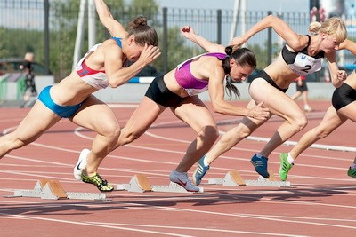

Corsa. Tipi e caratteristiche. Regole e tecniche. Benefici per la salute
Dall'antichità ai giorni nostri, la corsa è lo sport più comune e più accessibile. Per le lezioni non è necessario altro che desiderio, abbigliamento sportivo e scarpe. Un numero enorme di persone corre ogni giorno per mantenersi in buona forma fisica. Ma solo pochi fanno jogging professionalmente, ponendosi il compito di raggiungere determinati risultati.
Storia dello sviluppo
I vantaggi di correre persone apprezzate nei tempi antichi. Con il suo aiuto, cacciato, fuggito da nemici e predatori. La velocità della fanteria è stata determinata dalla velocità di movimento dell'esercito nel suo complesso.
I primi concorsi ufficiali di corsa sono stati gli antichi Giochi Olimpici, tenutosi nel 776 aC. e. includevano una distanza — 192 m. nei successivi 50 anni sono stati sviluppati e utilizzati nei Giochi 24 Altre distanze di corsa. Anche allora in Grecia c'erano esercizi speciali per allenare i corridori. E i vincitori delle gare sono diventati eroi nazionali.
Con la fine dell'antichità, anche le competizioni olimpiche cessarono. Lo sport da corsa ha continuato il suo sviluppo nel XVIII secolo.
Soprattutto si diffuse in Inghilterra, dove si svolgevano regolarmente partenze. Nel 1837 si è svolta la prima gara con ostacoli, e nel 1845 — inizia la lunga distanza.
Nel 1886 ad Atene si sono svolti i primi Giochi Olimpici del nostro tempo. Sono st
Altrimenti si chiama correre per brevi distanze. Tali gare sono molto spettacolari, perché il risultato della gara è impossibile da prevedere-a volte il primo al traguardo può venire atleta, in esecuzione per ultimo.
Le distanze principali sono 100, 200 e 400 m. Ci sono anche specifiche: 30 M, 60 e 300.
Le corse sulle principali distanze si svolgono nei Campionati del mondo e nei Giochi Olimpici. E specifici (60 e 300 m) sono utilizzati nei Campionati Europei.
Distanza media
Include anche le distanze di base e gli extra. Il primo include 800 m, 1,5 km, 3 km. e il secondo - 600 M, 1 km, 2 km, un miglio.
Steier (lunga distanza)
Questo è il superamento di qualsiasi distanza di oltre 3 km. per le corse fino a 10 km vengono utilizzati gli stadi, e più - in autostrada. Le distanze principali includono 5 km, 10 km, 42 km 195 m. per ulteriori-15 km, 21 km 97,5 m (maratona), 50 km, 100 km (Ultramarathon).
